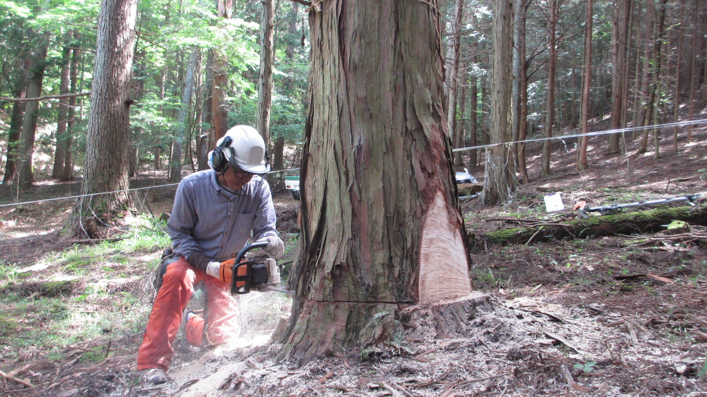
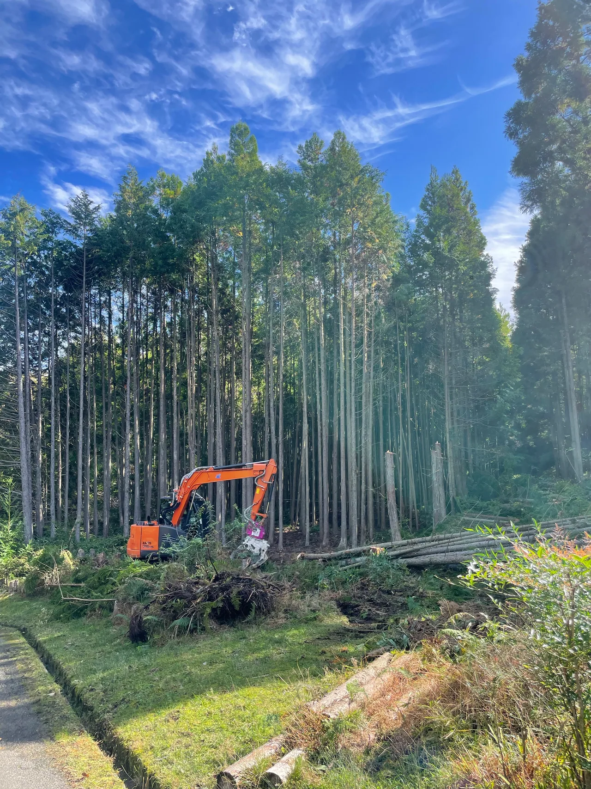
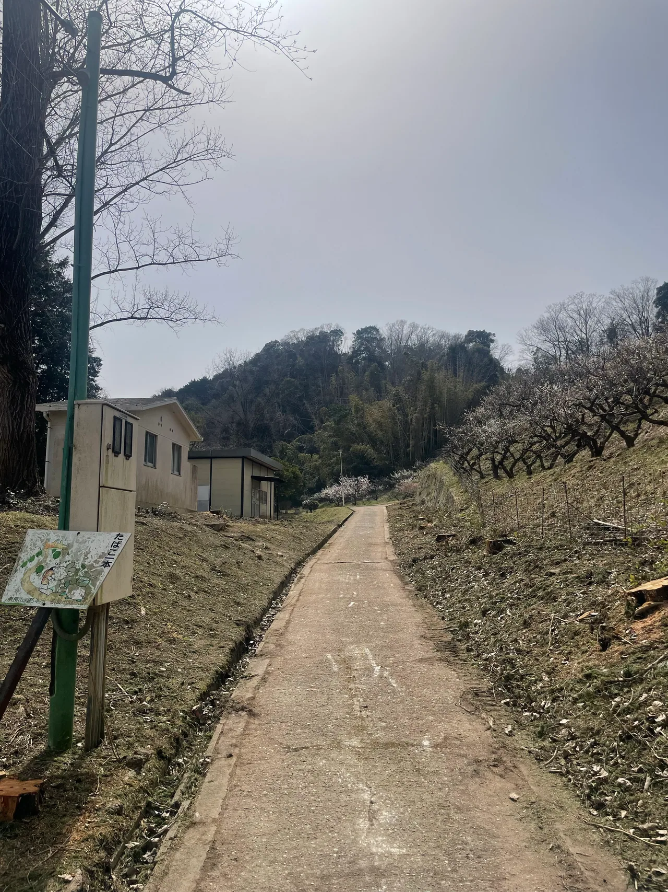

工程 一
倒す前に倒す先を決めます
木の傾きと重心、その日の風、倒れた先に何があるかを確認します。家や塀、電線、残したい木が倒れる範囲に入っていないか。倒す方向は、切り口の形で決まります。
方向が取れない場所では無理に倒さず、特殊伐採（空の章）の方法に切り替えることもあります。その判断も含めて、見積の際にご説明します。

伐採は、木の一生を終わらせる仕事です。倒す方向、倒れたあとの搬出、切り株をどうするか。切る前に決めることが多く、そこを曖昧にしたままチェーンソーを入れることはありません。このページでは、庭木一本から空き家・山林の伐採まで、仕事の中身と料金の目安をご説明します。
お知りになりたい項目をタップすると、その場所へ移動いたします。料金だけをご確認になりたい場合は、「料金の目安」をお選びください。
伐採は根元から伐り倒す作業ですが、現場で時間をかけるのは「伐る」工程そのものではありません。倒す先の確認、逃げ道の確保、倒れた材をどう運び出すか。この三つが決まってから、初めて切り口を入れます。

木の傾きと重心、その日の風、倒れた先に何があるかを確認します。家や塀、電線、残したい木が倒れる範囲に入っていないか。倒す方向は、切り口の形で決まります。
方向が取れない場所では無理に倒さず、特殊伐採（空の章）の方法に切り替えることもあります。その判断も含めて、見積の際にご説明します。
倒れた木は、そのままでは運び出せません。枝を払い、幹を運べる長さに切り分ける「玉切り」を行い、搬出の経路まで運びます。伐採の費用が現場ごとに違う理由の多くは、この搬出の手間にあります。
薪として残したい場合は、処分せずに置いていくこともできます。ご希望は見積のときにお聞きします。

伐採は地際で伐るため、切り株は残ります。そのままにするか、掘り起こして無くす（抜根）かで、その後の土地の使い方が変わります。解体や売却、駐車場への転用を予定されている場合は、その計画に合わせて方法をご提案します。
枝葉の処分と周囲の清掃まで行い、最後にお客様と一緒に仕上がりを確認して、作業は終わります。
伐採の相談は、木そのものよりも「その場所をどうしたいか」から始まることがほとんどです。代表的な例をご紹介します。
植えたときは小さかった木が、家の屋根を越えてしまった。手入れの負担を考えて、伐採を選ばれるご相談です。一本から対応しています。
売却や解体の前、管理が難しくなった実家の庭など。庭木の伐採から搬出・処分までまとめて対応します。遠方にお住まいの方からのご依頼も多くあります。
枯れて倒れる危険のある木、台風で傾いた木。放置すると倒木や落枝の事故につながります。危険度の高いものは、優先して日程を調整します。
竹は放っておくと境界を越えて広がります。伐採とあわせて、今後の管理の仕方についてもご相談いただけます。
所有する山林の手入れ、道路や隣地へ倒れる心配のある斜面の木。現場の出入りの経路を確認したうえで、作業方法を決めます。
台風や雪で倒れた木の処理。建物や通路にかかっている場合は、状況を見ながら安全な順序で撤去します。

当日の作業は、立っている木を、最後は更地に近い状態まで持っていく工程です。順序は現場によって変わりますが、基本の流れは次のとおりです。
倒す方向、退避する場所、近隣への声かけを行います。作業範囲に立ち入らないよう、周囲の安全を確保してから始めます。
倒したい方向に、切り口（受け口）を作ります。この切り口の角度と位置が、倒れる方向を決めます。
反対側から追い口を入れ、木が倒れ始めたら決めておいた場所へ退避します。倒れるのは数秒の出来事です。
倒れた幹から枝を払い、運べる長さに切り分けます。材の量と搬出の距離によって、この工程に一番時間がかかることもあります。
切り分けた材と枝葉を車まで運び、処分場へ運びます。薪として残す分は、ご希望の場所にまとめて置きます。
切り株の処理を済ませ、周囲を清掃します。最後にお客様と一緒に確認していただき、作業完了となります。
現行のご案内と同じ目安です。実際の金額は、木の高さや太さだけでなく、搬出のしやすさや処分量によって変わります。正式な金額は、写真による概算と現地確認のうえで、作業前にお伝えします。
切った材を車まで運ぶ距離と道の状態です。路地の奥や坂道では、その分の人手と時間がかかります。
搬出・処分は量に応じて別途となる場合があります。薪として残すなど、処分量を減らす方法もご相談いただけます。
写真を送っていただければ、概算の見積をお出しします。現地確認と正式見積は無料です。金額をお聞きになってから断っていただいても構いませんし、見積のあとに金額が増えることはありません。
木の場所と本数、お困りの内容をお知らせください。写真があると、その後のご案内が早くなります。
写真から概算をお伝えし、必要な場合は現地を確認して正式な金額と作業内容をまとめます。
近隣へご挨拶をしてから始めます。雨風が強い日は安全のため日程を調整し、前日までにご連絡します。
搬出と清掃が終わりましたら、仕上がりを一緒にご確認いただいて完了です。
はい、庭木一本から対応しています。本数が少ないからといって対応が変わることはありませんので、お気軽にご相談ください。
写真で概算の見積が可能です。木の全体、根元、周囲の建物や電線、搬出の経路が分かる写真をLINEでお送りください。正式な金額は、必要に応じて現地確認のうえでお伝えします。
伐採は地際で伐りますので、切り株は残ります。掘り起こして無くす抜根も対応できますが、手間がかかりますので別途の見積となります。土地の今後の使い方に合わせてご相談ください。
残せます。処分せずに置いていくことも、薪として使いやすい長さに切り分けることもできます。ご希望は見積の際にお知らせください。
大丈夫です。金額と作業内容をご確認いただいたうえでご判断ください。無理にお勧めすることはありません。
作業前に近隣へご挨拶に伺い、音の出る作業の時間帯にも配慮して進めます。ご心配な点がありましたら、相談の際にあわせてお知らせください。
木の始末は、場所と状態によって方法が変わります。竜樹伐採では仕事を三つの章に分け、それぞれ専用のページでご説明しています。
伐るべきかどうか迷っている段階でも構いません。写真を拝見して、伐採が必要かどうかも含めて正直にお答えします。残したほうがよい木は、そのようにお伝えします。
作業中は電話に出られないことがあります。留守番電話にご用件を残していただければ、折り返しご連絡します。LINEとメールは24時間受け付けています。
LINE公式アカウント：ベーシックID @498yeapp（リンクはLINE公式アカウント管理画面で取得した友だち追加URLです）
対応エリア：奈良市を中心に、生駒市・大和郡山市・天理市・桜井市・橿原市・香芝市・王寺町・斑鳩町・木津川市・精華町など奈良県内と近郊。大阪・京都・三重・和歌山方面も、内容によりご相談いただけます。